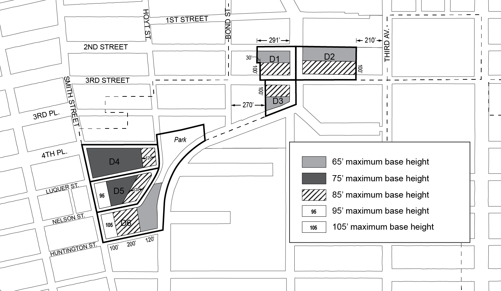
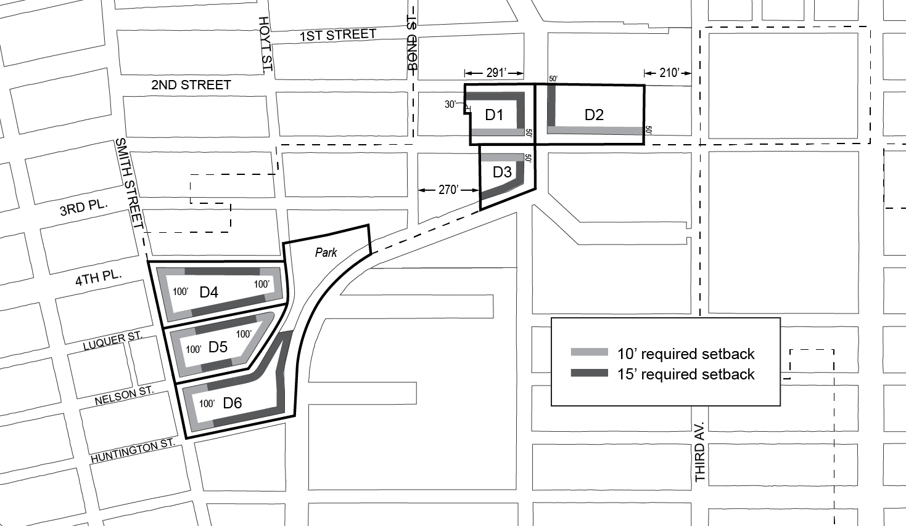
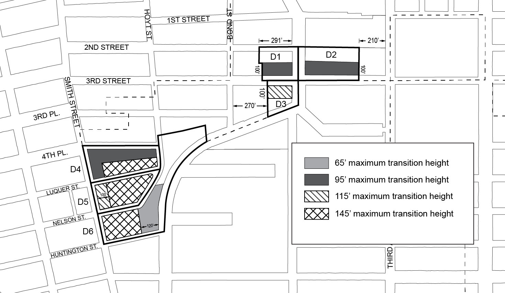

Last amended 2021-11-23
The “Special Gowanus Mixed Use District” established in this Resolution is designed to promote and protect the public health, safety and general welfare of the Gowanus neighborhood and the greater community. These general goals include, among others, the following specific purposes:
(a) to recognize and enhance the vitality and character of an existing mixed use neighborhood;
(b) to encourage stability and growth in the Gowanus neighborhood by permitting compatible light manufacturing and residential uses to coexist;
(c) to encourage investment in a mixed use neighborhood by permitting the expansion and new development of a wide variety of uses in a manner that ensures the health and safety of residents and employees;
(d) to improve the physical appearance of the streetscape by providing and coordinating harmonious open space, sidewalk amenities and landscaping within a consistent urban design;
(e) to promote and enhance visual and physical access to and around the Gowanus Canal;
(f) to enhance neighborhood economic diversity by broadening the range of housing choices for residents at varied incomes;
(g) to expand local employment opportunities and to promote the opportunity for workers to live in the vicinity of their work; and
(h) to promote the most desirable use of land and thus conserve the value of land and buildings and thereby protect the City’s tax revenues.
Last amended 2024-06-06
Definitions specifically applicable to this Chapter are set forth in this Section. Other defined terms are set forth in Sections 12-10, 32-301, 37-311, 62-11 and 66-11. The definition of development shall be as set forth in Section 12-10, except where otherwise specified.
Gowanus mix uses
“Gowanus mix uses” are community facility, commercial, and manufacturing uses set forth in Section 139-12 (Gowanus Mix Uses).
Gowanus retail and entertainment uses
“Gowanus retail and entertainment uses” are community facility and commercial uses set forth in Section 139-13 (Gowanus Retail and Entertainment Uses).
Mixed use district
In the Special Gowanus Mixed Use District, a “mixed use district” shall be any M1 District paired with a Residence District, as indicated on the zoning maps. For the purposes of applying provisions of districts adjacent to a mixed use district, a mixed use district shall be considered a Manufacturing District.
Select community facility uses
For the purposes of this Chapter, the following community facility uses shall also be considered “select community facility uses”:
Houses of worship, rectories or parish houses; and
Health facilities requiring approval under Article 28 of the Public Health Law of the State of New York that, prior to July 10, 1974, have received approval of Part I of the required application from the Commissioner of Health.
Last amended 2021-11-23
In harmony with the general purposes and content of this Resolution and the general purposes of the Special Gowanus Mixed Use District, the regulations of this Chapter shall apply within the Special Gowanus Mixed Use District. The regulations of all other Chapters of this Resolution are applicable, except as modified, supplemented or superseded by the provisions of this Chapter. In the event of a conflict between the provisions of this Chapter and other regulations of this Resolution, the provisions of this Chapter shall control.
Last amended 2021-11-23
The regulations of this Chapter are designed to implement the Special Gowanus Mixed Use District Plan. The district plan includes the following maps in the Appendices to this Chapter:
Appendix A – Special Gowanus Mixed Use District Plan
Map 1 Subdistricts
Map 2 Subareas
Map 3 Ground Floor Use Requirements
Map 4 Sidewalk Widening Lines
Appendix B – Gowanus Canal Waterfront Access Plan
Map 1 Parcel Designation
Map 2 Public Access Elements
Map 3 Designated Visual Corridors
The maps are hereby incorporated and made part of this Resolution for the purpose of specifying locations where the special regulations and requirements set forth in the text of this Chapter apply.
Last amended 2021-11-23
In order to carry out the purposes and provisions of this Chapter, five subdistricts are established within the Special Gowanus Mixed Use District. In addition, subareas are established within Subdistricts B and D.
Subdistrict A – Fourth Avenue Subdistrict
Subdistrict B – Upland Blocks Subdistrict
Subarea B1
Subarea B2
Subdistrict C – North Canal Corridor Subdistrict
Subdistrict D – South Canal Corridor Subdistrict
Subarea D1
Subarea D2
Subarea D3
Subarea D4
Subarea D5
Subarea D6
Subdistrict E – First Street Subdistrict
The boundaries of the subdistricts are shown on Map 1 and the boundaries of the subareas are shown on Map 2 in Appendix A of this Chapter.
Last amended 2021-11-23
In Subdistricts A, B, C, and D the underlying use regulations shall be modified by the provisions of this Section, inclusive. In Subdistrict E, the underlying district regulations shall apply.
Last amended 2024-06-06
For the purposes of applying the special bulk regulations of Section 139-212 (Gowanus mix), Gowanus mix uses shall include referenced commercial and manufacturing uses, as well as libraries, museums, community centers, non-commercial art galleries and philanthropic or non-profit institutions without sleeping accommodations listed under Use Group III. However, automotive repair and maintenance establishments listed under Use Group VI shall not be included.
Last amended 2024-06-06
For the purposes of applying the basic floor area ratio regulations of Section 139-21, Gowanus retail and entertainment uses shall be uses listed under Use Groups VI or VIII, other than those included in referenced commercial and manufacturing uses.
Last amended 2021-11-23
Supplementary Use Regulations
Last amended 2021-11-23
In the Special Gowanus Mixed Use District, the underlying sign regulations shall apply, except that:
(a) in Manufacturing Districts, the sign regulations of a C6-1 District, as set forth in Section 32-60, shall apply; and
(b) any accessory signs that are provided adjacent to a shore public walkway shall be governed by the provisions of Section 139-55 (Special Signage Regulations).
Last amended 2024-12-05
In Subdistricts A, B, C and D, the bulk regulations of the applicable underlying districts shall be modified by the provisions of this Section, inclusive. In Subdistrict E, the underlying regulations shall apply.
In Subdistrict A, the provisions of Section 34-112 (Residential bulk regulations in other C1 or C2 Districts or in C3, C4, C5 or C6 Districts) shall be modified so that, in C4-4D Districts, the applicable residential equivalent shall be an R9A District, as modified by the provisions of this Chapter.
Last amended 2021-11-23
In the Special Gowanus Mixed Use District, all blocks bounding the Gowanus Canal shall be considered waterfront blocks within the waterfront area, and the provisions of Article VI, Chapter 2 (Special Regulations Applying in the Waterfront Area), as modified by the provisions of this Chapter, shall apply.
All portions of zoning lots having a boundary within or coincident with the boundaries of the Gowanus Canal shall be included as part of the upland lot and deemed to be lot area, regardless of the location of the shoreline.
For the purposes of this Chapter, the boundaries of the Gowanus Canal shall be as shown on the City Map, and shall include the First Street Basin.
Last amended 2024-06-06
Basic floor area regulations are established in Section 139-211. Such regulations may be modified by the provisions of this Section, inclusive.
The basic maximum floor area ratios may be increased for certain zoning lots pursuant to Sections 139-212 (Gowanus mix) and 139-213 (Special floor area provisions for transit improvements).
Special regulations for community facility floor area on zoning lots containing schools are set forth in Section 139-214 (Special floor area provisions for zoning lots containing schools).
Special regulations for certain zoning lots are set forth in Section 139-215 (Special floor area provisions for zoning lots containing comfort stations) and 139-216 (Special floor area provisions for street improvements).
For the purposes of applying the provisions of Section 64-322 (Special floor area modifications for flood-resistant buildings), primary frontages shall be the locations designated on Map 3 in the Appendix to this Chapter.
Last amended 2024-12-05
For the purposes of applying the Mandatory Inclusionary Housing Program provisions set forth in Section 27-10 (ADMINISTRATION OF AFFORDABLE HOUSING), inclusive, Mandatory Inclusionary Housing areas within the Special Gowanus Mixed Use District are shown on the maps in APPENDIX F (Mandatory Inclusionary Housing Areas and former Inclusionary Housing Designated Areas) of this Resolution. Such provisions are modified by the provisions of this Chapter.
Last amended 2021-11-23
The underlying yard and rear yard equivalent regulations shall apply, as modified by the provisions of this Section, inclusive.
Last amended 2024-12-05
In the event of a conflict between the provisions of this Chapter and the provisions of Article VI, Chapter 4 (Special Regulations Applying in Flood Hazard Areas), the provisions of Article VI, Chapter 4, shall control.
Last amended 2021-11-23
The height and setback regulations of the applicable underlying districts are modified as follows:
(a) In Commercial Districts, the height and setback regulations of Section 35-60 (MODIFICATION OF HEIGHT AND SETBACK REGULATIONS) shall apply to all buildings, as modified by the provisions of this Section, inclusive.
(b) In Mixed Use Districts, the height and setback regulations of Section 123-60 (SPECIAL BULK REGULATIONS) shall apply, as modified by the provisions of this Section, inclusive.
(c) In Manufacturing Districts, the underlying height and setback regulations of Sections 43-43 (Maximum Height of Front Wall and Required Front Setbacks), 43-44 (Alternate Front Setbacks), and 43-45 (Tower Regulations) shall not apply. In lieu thereof, minimum and maximum base heights and maximum heights for buildings or other structures shall be as set forth in this Section, inclusive. The other underlying regulations of Article IV, Chapter 3 (Bulk Regulations) shall apply, as modified by the provisions of this Section, inclusive.
(d) The special bulk regulations applicable in the waterfront area of Section 62-30 (SPECIAL BULK REGULATIONS) shall not apply. In lieu thereof, the height and setback regulations of this Section, inclusive, shall control.
The height of all buildings or other structures shall be measured from the base plane.
Last amended 2024-12-05
For transit-adjacent sites, as defined in Section 66-11 (Definitions), in the event of a conflict between the provisions of this Chapter and the provisions of Article VI, Chapter 6 (Special Regulations Applying Around Mass Transit Stations), the provisions of Article VI, Chapter 6 shall control.
Last amended 2024-12-05
In Mixed Use Districts, the special use, bulk, and parking and loading provisions of Article XII, Chapter 3 (Special Mixed Use Districts) shall apply, except where modified by the provisions of this Chapter, and shall supplement or supersede the provisions of the designated Residence or M1 District, as applicable.
Notwithstanding the provisions of Section 123-10, in the event of a conflict between the provisions of this Chapter and the provisions of Article XII, Chapter 3, the provisions of this Chapter shall control.
Last amended 2021-11-23
In Subdistricts A, B, C, and D, the underlying parking and loading regulations shall be modified by the provisions of this Section. On waterfront blocks, the provisions of Section 62-40 shall not apply. In Subdistrict E, the underlying regulations shall apply.
Special Accessory Off-street Parking Regulations
Last amended 2024-06-06
In all districts, the loading regulations of an M1-5 District shall apply.
Last amended 2024-06-06
In addition to the curb cut restrictions associated with Section 139-41, no curb cut shall be permitted within 40 feet of a waterfront public access area.
Curb cuts prohibited by this Section may be authorized by the City Planning Commission provided the Commission finds that a curb cut at such a location:
The Commission may prescribe appropriate conditions and safeguards to minimize adverse effects on the character of the surrounding area.
Last amended 2021-11-23
In all Subdistricts, the provisions of this Section shall apply to all zoning lots, as specified below.
Last amended 2024-06-06
The underlying ground floor level streetscape provisions set forth in Section 32-30 (STREETSCAPE REGULATIONS), inclusive, shall apply, except that ground floor level street frontages along streets, or portions thereof, designated on Map 3 (Ground Floor Use Requirements) in Appendix A of this Chapter shall be considered Tier C street frontages. In addition, along intersections designated on Map 3, the underlying streetscape requirements for Tier C street frontages shall be modified such that the portion of the ground floor level street frontage that is required to be allocated to non-residential uses shall be further limited to Gowanus retail and entertainment uses.
Last amended 2023-12-06
In all districts, all developments, or enlargements that increase the floor area on a zoning lot by 20 percent or more, shall provide street trees in accordance with Section 26-41 (Street Tree Planting).
Last amended 2021-11-23
For developments along the portions of streets designated on Map 4 (Sidewalk Widening Lines) in Appendix A of this Chapter, a sidewalk widening shall be required, providing a total sidewalk width of:
(a) 17 feet along Third Avenue;
(b) 15 feet along Nevins Street; and
(c) 13 feet along Fifth Street.
The total sidewalk width shall be measured perpendicular from the street line. Such sidewalk shall be improved to Department of Transportation standards and shall be provided at the same level as the adjoining public sidewalk and be accessible to the public at all times.
Awnings and canopies shall be considered permitted obstructions within a sidewalk widening provided that no structural posts or supports may be located within any portion of the sidewalk or such widening.
Last amended 2021-11-23
For all zoning lots abutting bridge structures supporting streets which cross the Gowanus Canal at Union Street, Carroll Street, and Third Street, and are subject to waterfront public access area requirements, such waterfront public access area shall be designed to provide pedestrian connection to the street adjacent to the terminus of the bridge structure.
The requirements of this Section may be waived where the Commissioner of the Department of Buildings determines, in consultation with the Department of Transportation, that such a pedestrian connection to the street would result in a hazard to pedestrian or traffic safety.
Last amended 2024-06-06
For all waterfront zoning lots, the exemptions from waterfront public access area requirements listed in paragraph (a) of Section 62-52 shall not apply.
Such waivers shall be in effect for as long as the proposed use remains on the zoning lot. Upon development of the zoning lot following cessation of the use for a period of more than two years, full compliance with waterfront public access area requirements, as may be modified by future approvals, is required.
Last amended 2024-12-05
(a) In Commercial Districts with a residential equivalent of an R9 District, for developments on zoning lots that are located within 500 feet of the Union Street subway station, the Chairperson of the City Planning Commission may, by certification to the Commissioner of Buildings, allow a development to:
(1) receive a floor area bonus not to exceed 20 percent of the maximum floor area ratio permitted by Section 139-211 (Basic floor area regulations); and
(2) further modify additional height permitted pursuant to paragraph (b) of Section 66-234 (Special height and setback modifications) provided the total combined modification does not exceed 30 feet;
where a major improvement to the Union Street subway station consisting of one new off-street station entrance with an accessible route for persons with physical disabilities between two levels servicing the southbound platform is provided.
(b) Prior to issuing such a certification, the following requirements shall be met.
(1) To the extent required by the transit agency, the applicant shall execute an agreement, setting forth the obligations of the owner, its successors and assigns, to establish a process for design development and a preliminary construction schedule for the proposed improvement; construct the proposed improvement; establish a program for maintenance and capital maintenance; and establish that such improvements shall be accessible to the public during the hours of operation of the station or as otherwise approved by the transit agency. Where the transit agency deems necessary, such executed agreement shall set forth obligations of the applicant to provide a performance bond or other security for completion of the improvement in a form acceptable to the transit agency.
(2) Prior to obtaining a foundation permit or building permit from the Department of Buildings, a written declaration of restrictions, in a form acceptable to the Chairperson of the City Planning Commission, containing complete drawings of the improvement and setting forth the obligations of the owner as agreed upon with the transit agency pursuant to the requirements of paragraph (b)(1) of this Section, shall be recorded against such property in the Borough Office of the City Register of the City of New York. Proof of recordation of the declaration of restrictions shall be submitted in a form acceptable to the Department of City Planning.
(3) No temporary certificate of occupancy shall be granted by the Department of Buildings for the portion of the building utilizing bonus floor area authorized pursuant to the provisions of this Section until the required improvements have been substantially completed, as determined by the Chairperson, acting in consultation with the transit agency, where applicable, and such improvements are usable by the public. Such portion of the building utilizing bonus floor area shall be designated by the Commission in drawings included in the declaration of restrictions filed pursuant to this paragraph.
No permanent certificate of occupancy shall be granted by the Department of Buildings for the portion of the building utilizing bonus floor area until all improvements have been completed in accordance with the approved plans, as determined by the Chairperson, acting in consultation with the transit agency, where applicable.
Last amended 2021-11-23
For zoning lots containing schools regulated by the provisions of Section 139-214 (Special floor area provisions for zoning lots containing schools), the City Planning Commission may authorize the modification of any bulk regulation, including the amount of floor space exempted from the definition of floor area by Section 139-214, in order to better accommodate a school upon such zoning lot.
(a) Conditions
(1) No modification to the maximum building height shall exceed 30 feet; and
(2) No modification to the amount of floor space exempted from the definition of floor area shall exceed an additional 60,000 square feet of floor space.
(b) Findings
In determining such modifications, the Commission shall find:
(1) such modification is the least modification required to achieve the purpose for which it is granted;
(2) the proposed modification does not impair the essential character of the surrounding area; and
(3) the proposed modification will not have adverse effects upon light, air, and privacy of adjacent properties and of any existing buildings on the zoning lot.
Applications for authorizations shall be referred to the affected Community Board for a period of at least 30 days for comment. The Commission shall grant in whole or in part or deny the application within 60 days of the completion of the Community Board review period.
Last amended 2021-11-23
In Subdistrict B, for developments on zoning lots located in a Mixed-Use District, on a zoning lot greater than 40,000 square feet in lot area, the City Planning Commission may authorize the modifications set forth in paragraph (a) of this Section, provided that the conditions in paragraph (b) and findings in paragraph (c) are met.
(a) Modifications
The Commission may modify the following regulations:
(1) the use regulations of this Chapter, limited to ground floor use regulations and supplemental use regulations;
(2) the bulk regulations of this Chapter, except floor area ratio regulations, provided that any modifications to height and setback regulations do not exceed the heights permitted in an M1-4 District as set forth in Section 43-43; and
(3) the parking regulations related to the number of required accessory off-street parking spaces and the location and spacing of curb cuts.
(b) Conditions
As conditions for the granting of an authorization pursuant to this Section:
(1) the development shall result in a mix of uses on the zoning lot where the predominant amount of floor area is associated with non-residential uses; or
(2) the development shall:
(i) result in a mix of uses on the zoning lot where at least 20 percent of the floor area is associated with Gowanus mix uses;
(ii) not exceed 300 feet in height; and
(iii) be located on a zoning lot where existing buildings will occupy at least 20 percent of the lot coverage.
(c) Findings
In order to grant such authorization, the Commission shall find that:
(1) where modifying bulk regulations, such modifications shall result in a superior configuration of non-residential uses on the zoning lot than would be feasible by applying the Special Gowanus Mixed Use District regulations;
(2) where modifying ground floor use regulations, the advantages of an off-street loading and access outweigh the disadvantages incurred by the interruption of retail continuity; and
(3) where modifying supplemental use and parking regulations, that such modifications would present a limited interruption and would not create serious vehicular traffic congestion that would adversely affect the surrounding area.
Upon completion of the development, the zoning lot shall remain in compliance with the conditions set forth in paragraph (b) of this Section. Such requirements shall be reflected in a notice of restrictions recorded against all tax lots comprising such zoning lot, and a copy of such notice shall be provided to the Department of Buildings.
The Commission may prescribe appropriate conditions and safeguards to minimize adverse effects on the character of the surrounding area.
Last amended 2021-11-23
The provisions of Article VI, Chapter 2 (Special Regulations Applying in the Waterfront Area), shall apply, except as superseded, supplemented or modified by the provisions of this Section, inclusive.
The boundaries of the area comprising the Gowanus Canal Waterfront Access Plan, and the location of certain features mandated or permitted by the Plan, are shown on the maps in Appendix B of this Chapter.
The waterfront access plan has been divided into Parcels as shown on Map 1 of Appendix B of this Chapter, consisting of tax blocks and lots existing on September 22, 2021, as follows:
Parcel 1: Block 417, Lots 1, 10, 14, 21
Parcel 2: Block 424, Lots 1, 20
Parcel 3: Block 431, Lots 1, 2, 5, 6, 7, 12, 17, 43
Parcel 4: Block 425, Lot 1
Block 432, Lots 15, 25, 7501
Parcel 5: Block 439, Lot 1
Parcel 6a: Block 438, Lot 7
Parcel 6b: Block 438, Lots 1, 2, 3
Block 445, Lots 1, 7, 8, 11, 20, 50
Parcel 7: Block 452, Lots 1, 5, 19
Block 458, Lot 1
Parcel 8a: Block 453, Lots 1, 21
Parcel 8b: Block 453, Lot 26
Parcel 8c: Block 453, Lots 30, 31, 32, 33, 35, 36, 38, 39, 41, 42, 43, 44, 44, 45, 46, 48, 49, 50, 51
Parcel 8d: Block 453, Lot 54
Parcel 9: Block 967, Lot 1
Parcel 10: Block 967, Lot 24
Parcel 11: Block 972, Lots 1, 43, 58
Parcel 12a: Block 462, Lots 12, 14
Parcel 12b: Block 462, Lots 6, 8, 9, 42, 44
Parcel 12c: Block 462, Lots 1, 3, 4, 5, 50, 51
Parcel 13: Block 466, Lot 19
Parcel 14a: Block 466, Lots 17, 60
Parcel 14b: Block 466: Lot 1
Parcel 14c: Block 466, Lot 46
Parcel 15a: Block 471, Lot 125
Parcel 15b: Block 471, Lot 104, 110, 114, 116
Parcel 16: Block 471, Lots 1,100
Parcel 17: Block 471, Lot 200
For the purposes of this Section, inclusive, the definition of development shall be as set forth in Section 62-11 (Definitions).
Last amended 2021-11-23
The provisions of Article VI, Chapter 2 (Special Regulations Applying in the Waterfront Area) shall be modified in the area comprising the Gowanus Canal Waterfront Access Plan by the provisions of this Section.
(a) All waterfront public access areas
(1) Balconies
Balconies complying with the provisions of Section 23-62 (Balconies) shall be permitted obstructions in waterfront public access areas, provided the depth of obstruction is limited to four feet, and provided they are located at or above the floor level of the third story above grade of the building.
(2) Sun control devices
Awnings and other sun control devices shall be permitted obstructions in waterfront public access areas. However, when located at a level higher than the first story, excluding a basement, all such devices:
(i) shall be limited to a maximum projection from a building wall of 2 feet, 6 inches; and
(ii) shall have solid surfaces that, in aggregate, cover an area no more than 30 percent of the area of the building wall (as viewed in elevation) from which they project.
(3) Kiosks
Where a supplemental public access area exceeds 15,000 square feet, a kiosk shall be a permitted obstruction in such supplemental public access area with an area up to 400 square feet, including roofed areas.
(b) Shore public walkways
(1) Width of circulation paths
Shore public walkways shall provide a required circulation path with a minimum clear width of 10 feet. Secondary paths, where provided, shall have a minimum clear width of at least 4 feet, 6 inches.
(2) Level of circulation paths
At least 80 percent of a required circulation path shall be located at a level no less than six feet above the shoreline. However, up to 40 percent of such required circulation path may be provided below such level when providing access to a “get-down” located no more than two feet above the level of the shoreline.
(3) Access to circulation paths
The provisions of paragraph (a)(1) of Section 62-62 (Design Requirements for Shore Public Walkways and Supplemental Public Access Areas) shall apply, except that where a shore public walkway is on a zoning lot that is adjacent to a zoning lot which has not been improved with a shore public walkway, the portion of the circulation path that terminates at the common zoning lot line may be located within 40 feet of the shoreline.
In addition, for zoning lots adjoining streets containing bridge structures, the required connection of circulation paths to such a street may be waived by certification by the Department of Transportation, pursuant to Section 139-44 (Bridge Connection Requirements).
(4) Grading
The provisions of paragraph (d)(2) of Section 62-61 (General Provisions Applying to Waterfront Public Access Areas) shall be modified so that within five feet of the edge of any planting area, the grade level of such planting area shall be no more than 36 inches higher or lower than the adjoining level of the pedestrian circulation path.
(c) Supplemental public access areas
(1) Required Area
The provisions of Section 62-57 (Requirements for Supplemental Public Access Areas) are modified so that, in mixed use districts, a total waterfront public access area equivalent to 20 percent of the lot area is required.
(2) Lawns
The provisions of paragraph (c)(1) of Section 62-62 shall be modified so that a lawn shall only be required where a supplemental public access area is greater than 15,000 square feet. The Commission may authorize use of artificial turf within a lawn pursuant to Section 62-822 (Modification of waterfront public access areas and visual corridor requirements).
Where required, a lawn may be substituted for an athletic field of equivalent size, which may be unplanted, and shall be suitable for active recreational use.
(3) Comfort stations
Where a publicly accessible comfort station is provided as part of a development, the amount of supplemental public access area may be reduced by an amount equal to the size of the comfort station, provided that:
(i) the comfort station has an entrance fronting upon a waterfront public access area; and
(ii) a restrictive declaration, acceptable to the Department of City Planning and Department of Parks and Recreation, shall be executed and recorded, binding the owners, successors and assigns to provide and maintain such comfort station for the life of the development.
(d) Screening
Wherever a screening buffer is required to be provided, the minimum width of such buffer shall be four feet.
In addition to the waiver allowances of paragraph (c)(2)(iii) of Section 62-62, no screening buffer shall be required along the upland boundary, or portion thereof, which is adjacent to an unenclosed seating area accessory to a Gowanus retail and entertainment use. Where a screening buffer is so waived, design features shall be utilized to demarcate the shore public walkway or supplemental public access area from the non-publicly accessible area, which may include, but shall not be limited to, railings, fences, planting boxes, and distinct paving materials.
(e) Street treatment
For streets, or portions thereof, located within the Gowanus Canal Waterfront Access Plan, the portion of the street that is adjacent to a shore public walkway shall be improved as upland access, for a depth equivalent to the adjacent shore public walkway. This upland access area shall be designed to include, at a minimum, the following design elements:
(1) a foot path with a minimum clear width of ten feet, providing a connection to both the sidewalk located in the street as well as to the adjacent zoning lot;
(2) eight linear feet of seating complying with Section 62-652 (Seating) for every 30 feet of shoreline upon which the street fronts; and
(3) planted areas, containing planting or trees complying with Section 62-655 (Planting and trees) and occupying no less than 25 percent of the continuation area.
The provisions of this paragraph (e) shall not apply to portions of streets which will be improved pursuant to a site plan approved prior to November 23, 2021.
(f) Bulkheads
Wherever the United States Environmental Protection Agency requires the installation of a bulkhead in a location seaward of the zoning lot line, the area located between the lot line and bulkhead may be utilized for the purposes of satisfying the waterfront public access area requirements of the zoning lot. Where the provisions of this paragraph (f) are utilized, the location of the bulkhead shall be considered the shoreline for the purposes of providing the required waterfront public access areas.
(g) Issuance of foundation permits
Notwithstanding the provisions of Section 62-811 (Waterfront public access and visual corridors), within 18 months of November 23, 2021, a foundation permit may be issued for any development within the Waterfront Access Plan, upon certification by the Chairperson of the City Planning Commission to the Department of Buildings or Department of Business Services, as applicable, that:
(1) a remedial action plan has been submitted to the Office of Environmental Remediation or the New York State Department of Environmental Conservation, which includes the zoning lot containing the development; and
(2) a site plan has been submitted to the Department of City Planning, depicting that the proposed foundation will not conflict with the basic dimensional requirements of any required waterfront public access area or visual corridor, and, in addition, that the proposed foundation shall not conflict with any of the site-specific provisions below, based on the applicable Parcel number and Type:
(i) Type 1
For developments on Parcels 1, 2, 3, and 9, the site plan shall additionally designate all other potential locations where a supplemental public access area could be located, including:
(a) adjoining each street abutting the shore public walkway; and
(b) adjoining the shore public walkway.
In addition, for all developments on zoning lots which are not coterminous with the Parcel boundary, the waterfront public access area requirement for the depicted zoning lot shall be based on the combined lot area of the entire Parcel.
(ii) Type 2
For developments on Parcels 4, 5, and 12a, the site plan shall additionally designate any area located landward of the shore public walkway as necessary to achieve a 50-foot buffer from the shoreline.
(iii) Type 3
For developments on Parcels 6a, 6b, 8a, 8b, 8d, 11, 13, 14, 15, and 17, where the developments are on zoning lots which are not coterminous with the Parcel boundary, the waterfront public access area requirement for the depicted zoning lot shall be based on the combined lot area of the entire Parcel.
An application made pursuant to this paragraph (g) shall include a survey of the zoning lot and additional documentation set forth Section 62-80 (SPECIAL REVIEW PROVISIONS), inclusive. Except for excavation and foundation permits permitted by this paragraph (g), no other building permits shall be issued except pursuant to Section 62-811.
Last amended 2021-11-23
The provisions of Sections 62-50 (GENERAL REQUIREMENTS FOR VISUAL CORRIDORS AND WATERFRONT PUBLIC ACCESS AREAS) and 62-60 (DESIGN REQUIREMENTS FOR WATERFRONT PUBLIC ACCESS AREAS) are modified at the following designated locations which are shown on Map 1 in Appendix B of this Chapter.
Last amended 2021-11-23
The provisions of Section 62-512 (Dimensions of visual corridors) shall be modified by the provisions of this Section.
The lowest level of a visual corridor shall be determined by establishing a plane connecting the two points along the street lines from which the visual corridor emanates at an elevation five feet above curb level with the two points where the prolonged street lines intersect the shoreline, stabilized natural shore, bulkhead, upland edge of a waterfront yard raised pursuant to the provisions of paragraph (b) of Section 62-332 (Rear yards and waterfront yards), or the base plane of a pier or platform, whichever intersection occurs first. Such plane shall then continue horizontally seaward from the line of intersection. Visual corridors that are not prolongations of mapped streets shall be determined by establishing a plane connecting an elevation five feet above curb level at the two points along the lot line from which the visual corridor emanates with the two points of intersection at the shoreline, stabilized natural shore, bulkhead, upland edge of a waterfront yard raised pursuant to the provisions of paragraph (b) of Section 62-332, or the base plane of a pier or platform, whichever intersection occurs first.
Last amended 2021-11-23
The design requirements of Section 62-60 (DESIGN REQUIREMENTS FOR WATERFRONT PUBLIC ACCESS AREAS) are modified by the provisions of this Section, inclusive.
Last amended 2021-11-23
Any accessory sign that is provided adjacent to any waterfront public access area shall be limited to a single non-illuminated sign, indicating only the name or address of the building or commercial establishment to which it is accessory, not exceeding 16 inches in height.
Last amended 2021-11-23
The owners of two or more parcels may, either for purposes of certification pursuant to Section 62-811 or at any time thereafter, submit an alternate plan to the Chairperson of the City Planning Commission for the joint maintenance and operation of waterfront public access areas on such parcels, through an association or other entity established for this purpose or by other method. Such plan may include, in addition to provisions for maintenance and operation, alternate provisions with respect to security, liability and any other matters set forth in Section 62-72 (Performance and Maintenance Requirements), as well as special provisions for reporting and monitoring of compliance with obligations for maintenance and operation of the waterfront public access areas. Such plan and any instruments as are necessary for its implementation may be approved by the Chairperson and the Commissioner of Parks and Recreation upon a determination that:
(1) implementation of the plan would enhance maintenance and operation of the waterfront public access areas consistent with the purposes of this Chapter; and
(2) participation in the plan is available to owners of contiguous parcels identified in the Gowanus Canal Waterfront Access Plan on an equal basis.
Last amended 2024-06-06
In all Manufacturing Districts, in addition to the uses specified in Article IV, Chapter 2, the following uses shall also be permitted:
Last amended 2024-06-06
In all Mixed Use Districts, in addition to the uses specified in Article XII, Chapter 3, the following uses shall also be permitted:
Last amended 2024-06-06
In C4 Districts, the provisions of Section 32-422 (Location of floors occupied by commercial uses) shall be modified such that the limitations set forth in paragraph (a) of such Section shall be modified to apply to buildings constructed before November 23, 2021, and the requirements in paragraph (b) of such Section shall apply only where commercial uses are located above any story containing dwelling units. In addition, the provisions of paragraph (d) of Section 32-422 shall be modified such that eating or drinking establishments listed under Use Group VI shall be permitted on a story above dwelling units.
Last amended 2024-06-06
In Manufacturing Districts, the underlying regulations of Section 42-50 (SUPPLEMENTARY USE REGULATIONS) shall apply, except that all storage of materials or products shall be located within completely enclosed buildings regardless of distance from a Residence District.
Last amended 2024-12-05
The maximum floor area regulations for each district in the Special Gowanus Mixed Use District shall be as set forth in the table in this Section.
Row A establishes the maximum residential floor area ratio for qualifying affordable housing or qualifying senior housing.
Row B establishes a maximum floor area ratio for community facility uses, other than select community facility uses.
Row C sets forth the maximum floor area ratio for select community facility uses only. In addition, special regulations for schools are set forth in Section 139-214.
Row D establishes a maximum floor area ratio for Gowanus retail and entertainment uses only.
Row E establishes a maximum floor area ratio for all commercial uses, inclusive of Gowanus retail and entertainment uses.
Row F sets forth the maximum floor area ratio for manufacturing uses.
MAXIMUM FLOOR AREA RATIO
|
C4-4D |
M1-4 |
M1-4 / R6B |
M1-4 / R6A |
M1-4 / R7A |
M1-4 / R7-2 |
M1-4 / R7X |
|||
|
Subarea B1 |
Subarea B2 |
||||||||
|
A |
Maximum FAR for residential uses for MIH Sites |
8.5 |
- |
- |
2.2 |
3.6 |
4.6 |
4.4 |
5.4 |
|
B |
Maximum FAR for community facility uses |
6.5 |
3.6 |
2.7 |
2.0 |
3.0 |
4.0 |
4.0 |
5.0 |
|
C |
Maximum FAR for select community facility uses |
6.5 |
4.8 |
4.8 |
2.0 |
3.0 |
4.0 |
4.0 |
5.0 |
|
D |
Maximum FAR for Gowanus retail and entertainment uses |
3.4 |
2.0 |
2.0 |
2.0 |
2.0 |
2.0 |
2.0 |
2.0 |
|
E |
Maximum FAR for commercial uses |
3.4 |
3.61 |
2.72 |
2.0 |
3.0 |
3.0 |
3.0 |
4.0 |
|
F |
Maximum FAR for manufacturing uses |
- |
3.61 |
2.72 |
2.0 |
3.0 |
3.0 |
3.0 |
4.0 |
1 In Manufacturing Districts within Subarea B1, commercial and manufacturing uses which are also Gowanus mix uses shall have a maximum floor area ratio of 4.0.
2 In Manufacturing Districts within Subarea B2, commercial and manufacturing uses which are also Gowanus mix uses shall have a maximum floor area ratio of 3.0.
Last amended 2024-06-06
In M1 Districts paired with R7-2 or R7X Districts, the provisions of this Section may be utilized to increase the maximum floor area ratio set forth Section 139-211 (Basic floor area regulations).
(a) Inclusion of Gowanus mix uses
For zoning lots with buildings containing both residential uses and Gowanus mix uses, the maximum floor area ratio may be increased by the amount of Gowanus mix uses provided on the zoning lot, up to a floor area ratio of 0.3.
(b) Inclusion of both Gowanus mix uses and non-residential uses
For zoning lots utilizing the provisions of paragraph (a) of this Section, the maximum floor area ratio may be further increased by the amount of non-residential uses provided on the zoning lot, up to a floor area ratio of 0.3.
(c) Compliance and recordation
A Notice of Restrictions, the form and content of which shall be satisfactory to the City Planning Commission, for a property subject to inclusion of Gowanus mix uses pursuant to this Section, shall be recorded against the subject tax lot in the Office of the City Register.
The filing and recordation of such Notice of Restrictions shall be a precondition to the issuance of any building permit utilizing the provisions set forth in this Section. The recording information shall be referenced on the first certificate of occupancy to be issued after such notice is recorded, as well as all subsequent certificates of occupancy, for as long as the restrictions remain in effect.
(d) Annual reporting for Gowanus mix uses
No later than June 30 of each year, beginning in the first calendar year following the calendar year in which the first temporary or final certificate of occupancy was issued for a building utilizing the provisions of paragraph (b) of this Section, the building owner shall submit annually to the Chairperson of the City Planning Commission, Speaker of the City Council, and Brooklyn Community Board 6, a report on the existing conditions of floor area designated for Gowanus mix uses and include the information specified below:
(1) the date of the most recent update of this information;
(2) total floor area of the Gowanus mix uses in the development, pursuant to paragraph (b) of this Section;
(3) the name of each establishment occupying floor area reserved for Gowanus mix uses. Such establishment name shall include that name by which the establishment does business and is known to the public. For each establishment, the amount of floor area, the Use Group, subgroup and specific use as listed in this Resolution shall also be included;
(4) contact information, including the name of the owner of the building and the building management entity, if different, the name of the person designated to manage the building, and the street address, current telephone number and e-mail address of the management office. Such names shall include the names by which the owner and manager, if different, do business and are known to the public; and
(5) all prior periodic notification information required pursuant to the provisions of this paragraph.
The report shall be submitted by any method, including e-mail or other electronic means, acceptable to the Chairperson of the City Planning Commission.
Floor area provided to satisfy the requirements of Section 139-41 (Streetscape Regulations) may not be utilized to satisfy the requirements of this Section.
Last amended 2021-11-23
In Commercial Districts, the floor area ratios set forth in Section 139-211 (Basic floor area regulations) may be increased by up to 20 percent, pursuant to the provisions of Section 139-46 (Certification for Transit Improvements). Where the residential floor area ratio is increased, such additional floor area shall be exempt from the requirements of Section 27-131 (Mandatory Inclusionary Housing).
Last amended 2021-11-23
(a) As-of-right provisions
The provisions of this paragraph (a) shall apply to zoning lots with a lot area greater than 30,000 square feet, and which contain schools constructed in whole or in part pursuant to an agreement with the New York City School Construction Authority and subject to the jurisdiction of the New York City Department of Education.
On such zoning lots, up to 60,000 square feet of floor space within such school or, in Subarea D4 up to 100,000 square feet of floor space within such school, shall be exempt from the definition of floor area.
(b) Special permit provisions
In Manufacturing Districts within Subareas B1 or B2, the Board of Standards and Appeals may permit the allowable community facility floor area ratio for schools to be increased to 4.8, provided that the Board finds that the distribution of bulk on the zoning lot will not unduly obstruct the access to light and air in and to adjoining properties or public streets, and will result in satisfactory site planning and satisfactory urban design relationships of buildings to adjacent streets and the surrounding area. The Board may prescribe appropriate conditions and safeguards to minimize adverse effects on the character of the surrounding area.
Last amended 2021-11-23
For zoning lots containing a comfort station provided in accordance with the provisions of paragraph (c)(2) of Section 139-51 (Area-wide Modifications), an area equal to 200 percent of the floor space within such comfort station may be exempted from the definition of floor area.
Last amended 2021-11-23
In Subareas D4, D5, and D6, for zoning lots containing mapped streets, where such mapped streets will be improved and opened to the public, the provisions of this Section may apply.
(a) Street area
The lot area of a zoning lot adjacent to newly improved street may be considered to be increased by an amount equal to the area contained within the bed of such street, as measured from the centerline of such street to the street line adjoining the zoning lot.
(b) Transfer of floor area
Residential floor area may be transferred from a granting site to a receiving site located directly across the newly improved street, and may exceed the maximum floor area ratio permitted on the receiving site, provided that:
(1) the owners of the granting site and the receiving site shall jointly notify the Department of City Planning, in writing, of their intent to transfer residential floor area. Such notification shall include a site plan showing the conditions and floor area calculations for the granting site and the receiving site, before and after the transfer;
(2) no building permit shall be issued by the Department of Buildings for a building on a receiving site containing any such transferred residential floor area until the Chairperson of the City Planning Commission has certified to the Department of Buildings that plans submitted to the Department of City Planning comply with the requirements of this Section; and
(3) no certificate of occupancy shall be issued by the Department of Buildings for any portion of a building utilizing the transferred residential floor area until the Chairperson of the City Planning Commission certifies to the Department of Buildings that such building has been constructed in accordance with the plan certified by the Chairperson pursuant to paragraph (b)(2) of this Section.
Notices of restrictions shall be filed by the owners of the granting site and the receiving site in the Office of the Register of the City of New York, indexed against the granting site and the receiving site(s), certified copies of which shall be submitted to the Department of City Planning. Notice by the Department of City Planning of its receipt of certified copies thereof shall be a condition to issuance of a building permit for a building on the receiving site containing any such transferred residential floor area.
The transfer of residential floor area, once completed, shall irrevocably reduce the maximum residential floor area permitted on the granting site. Any building on a receiving site that uses the residential floor area so transferred shall comply with all other applicable bulk regulations of this Chapter.
Last amended 2023-12-06
In all Commercial, Manufacturing, and Mixed Use Districts, the permitted obstruction provisions of paragraph (b)(2) of Section 33-23 and paragraph (b)(1) of Section 43-23 shall be modified such that, in any rear yard, any building or portion of a building used for any permitted non-residential use (except any building portion containing rooms used for living or sleeping purposes) shall be a permitted obstruction, provided that the height of such building, or portion thereof, shall not exceed two stories, excluding basements, nor in any event 30 feet above curb level. Any allowance for other permitted obstructions above a building in a rear yard or rear yard equivalent set forth in Section 33-23 or 44-23, as applicable, shall be permitted above such modified height limitations.
Last amended 2021-11-23
In all Manufacturing Districts, the provisions of 43-26 (Minimum Required Rear Yards) and 43-261 (Beyond one hundred feet of a street line) shall not apply. In lieu thereof, a rear yard shall be provided at the minimum depth set forth in the table below for the applicable height above the base plane, at every rear lot line on any zoning lot.
REQUIRED DEPTH OF REAR YARD
Height above base plane | Required depth |
Below 65 feet | 10 |
Above 65 feet and below 125 feet | 15 |
Above 125 feet | 20 |
In addition, in all Manufacturing and Mixed Use Districts, the provisions of Section 43-28 (Special Provisions for Through Lots) shall be modified such that no rear yard equivalent shall be required on any through lot or through lot portion of a zoning lot.
Last amended 2021-11-23
In Manufacturing and Mixed Use Districts, the provisions of Section 43-304 (Required front yards along district boundary located in a street) shall not apply.
In Commercial, Manufacturing, and Mixed Use Districts, the underlying yard requirements applying along district boundaries of Sections 33-292 (Required yards along district boundary coincident with rear lot lines of two adjoining zoning lots), 33-293 (Required yards along district boundary coincident with side lot line of zoning lot in a Commercial District), 43-302 (Required yards along district boundary coincident with rear lot lines of two adjoining zoning lots) and 43-303 (Required yards along district boundary coincident with side lot line of zoning lot in a Manufacturing District), shall be superseded by the provisions of this Section as follows:
(a) When side or rear lot lines coincide with a side lot line of a zoning lot in an adjoining Residence District, an open area not higher than curb level, and at least eight feet in depth, shall be provided; and
(b) Where side or rear lot lines coincide with the rear lot line of a zoning lot in an adjoining Residence District, an open area not higher than 30 feet above base plane and at least 20 feet in depth, shall be provided.
Last amended 2024-12-05
The provisions of Section 62-33 (Special Yard and Lot Coverage Regulations on Waterfront Blocks) shall be modified such that a waterfront yard shall be provided in accordance with the provisions of Section 62-332 (Rear yards and waterfront yards) on all waterfront zoning lots, as that term is defined in Section 62-11, regardless of use.
The depth of the waterfront yard shall be measured from the zoning lot line adjoining the Gowanus Canal, or where the provisions of paragraph (f) of Section 139-51 (Area-wide Modifications) are utilized, from the bulkhead. The depth of the waterfront yard may be reduced as set forth in Section 62-332.
Last amended 2021-11-23
For the purposes of applying the applicable bulk regulations, the boundaries of waterfront public access areas, as well as lot lines abutting public parks, shall be considered narrow street lines.
Where a continuous sidewalk widening is provided along the entire frontage of a zoning lot, the interior boundary of such widening shall be considered a street line for the purpose of applying the height and setback regulations of this Chapter, except that where a sidewalk widening is provided pursuant to Section 139-43 (Sidewalk Widening Requirements), any setback required by this Section may be reduced by one foot for each foot by which the sidewalk is widened, provided that no setback shall be less than seven feet in depth.
Where a provision of this Chapter allows a modification to the maximum building height, and multiple modifications apply to a building, such modifications shall be applied cumulatively.
Last amended 2024-12-05
In all districts, the underlying permitted obstruction regulations shall be modified by this Section.
Last amended 2024-12-05
In Subdistrict A, the underlying district regulations shall be modified by the provisions of this Section.
Last amended 2024-12-05
In Subdistrict B, the underlying district regulations shall be modified by the provisions of this Section.
Table 1
MINIMUM BASE HEIGHT, MAXIMUM BASE HEIGHT, AND MAXIMUM BUILDING HEIGHT – FOR M1-4 DISTRICTS (in feet)
|
Minimum base height |
Maximum base height |
Maximum building height |
|
|
in Subarea B1 |
15 |
95 |
115 |
|
in Subarea B2 |
15 |
65 |
85 |
Table 2
MINIMUM BASE HEIGHT, MAXIMUM BASE HEIGHT, AND MAXIMUM BUILDING HEIGHT – FOR MIXED USE DISTRICTS (in feet)
|
Minimum base height |
Maximum base height |
Maximum building height |
|
|
M1-4/R6B |
30 |
45 |
55 |
|
M1-4/R6A |
40 |
65 |
85 |
|
M1-4/R7A |
40 |
75 |
95 |
|
M1-4/R7X |
60 |
105 |
145 |
Last amended 2024-12-05
Last amended 2024-12-05



Last amended 2024-12-05
In all subdistricts, for street walls with widths exceeding 200 feet, a minimum of 20 percent and no more than 50 percent of the surface area of such street walls above the level of the second story, or a height of 30 feet, whichever is lower, shall either recess or project a minimum of three feet from the remaining surface of the street wall. In addition to dormers permitted pursuant to Section 139-232 (Permitted obstructions), any other projection shall be considered a permitted obstruction into a required setback, provided that the depth of such projection shall not exceed three feet.
In addition, in Subdistrict D, the underlying dormer provisions of paragraph (b)(1) of Section 23-413 shall be modified for portions of buildings facing Third Street, so that above the maximum base height, dormers shall be permitted only within 75 feet of the intersection of two streets.
Last amended 2021-11-23
In Subdistrict C, and in Subareas D1, D2, and D3, for zoning lots containing schools regulated by Section 139-214 (Special floor area provisions for zoning lots containing schools), the maximum tower height specified by the regulations in this Section, inclusive, may be increased as-of-right by 40 feet. This allowance may be further modified by the provisions of Section 139-47 (Authorization for sites containing schools).
Last amended 2024-12-05
In all districts, no accessory off-street parking spaces shall be required for manufacturing, commercial, or community facility uses.
Last amended 2024-12-05
For residences in Commercial and Mixed Use Districts, the provisions of Sections 25-51 and 36-42 (Off-site Spaces for Residences) shall be modified to allow the zoning lot containing required accessory off-street parking spaces for residences to be located in any zoning district, as well as anywhere within the Special Gowanus Mixed Use District.
Last amended 2024-12-05
For residences in Commercial and Mixed Use Districts, the provisions of Sections 25-541 and 36-441 (Joint facilities) shall not apply. In lieu thereof, the provisions of this Section shall apply.
Required accessory off-street parking spaces may be provided in facilities designed to serve jointly two or more buildings or zoning lots, provided that the number of spaces in such joint facilities shall be not less than that required for the combined number of dwelling units in such buildings or zoning lots, and provided that the design and layout of such joint facilities meets the standards of adequacy set forth in regulations promulgated by the Commissioner of Buildings.
Last amended 2021-11-23
On Parcels 4, 5, 13, 14 and 15, where a shore public walkway is required, such shore public walkway shall have a minimum width of 30 feet. The required minimum depth of a waterfront yard shall be 30 feet.
Last amended 2021-11-23
On Parcels 8a, 8b, 8d and 9, where a shore public walkway is required, such shore public walkway shall have a minimum width of 30 feet, except that for shore public walkways adjoining the First Street Basin, the minimum width shall be 20 feet. The required minimum depth of a waterfront yard shall be 30 feet, except that for waterfront yards adjoining the First Street Basin, the minimum depth shall be 20 feet. In addition, for parcels where the required shore public walkway only adjoins the First Street Basin, the provisions of Section 62-57 (Requirements for Supplemental Public Access Areas) shall not apply. An area equal to at least 25 percent of the area of the shore public walkway shall be planted, and one linear foot of seating shall be provided for every 125 feet of frontage along the Gowanus Canal.
Last amended 2021-11-23
On Parcel 12, where a supplemental public access area adjoining an upland connection or street is provided, such supplemental public access area shall be permitted to be provided with a maximum width to depth ratio of 3:1, and the longest side shall be permitted to adjoin the street.
Last amended 2021-11-23
On Parcel 14a, a supplemental public access area shall be provided along the entire length of the lot line adjoining Parcel 13, connecting the street to the shore public walkway, and shall comply with the design reference standards applicable to a Type 1 upland connection set forth in Section 62-64 (Design Requirements for Upland Connections). Such supplemental public access area may coincide with a visual corridor required pursuant to Section 139-53 (Special Visual Corridor Provisions).
Last amended 2021-11-23
On Parcel 17, the total lot area utilized in the calculation of required supplemental public access area shall include all zoning lot portions located within Parcel 17, including portions of a zoning lot located within a street.
Last amended 2021-11-23
In addition to the provisions of paragraph (a) of Section 62-651 (Guardrails, gates and other protective barriers), guardrails shall comply with the illustrations provided in either paragraph (a) or (b) of this Section, or shall be of a comparable design which is the minimum modification needed. Where modification is sought, it shall be deemed suitable by the Chairperson of the City Planning Commission in consultation with the Department of Parks and Recreation (DPR).
(a) Option 1: vertical bar guardrail
(b) Option 2: mesh guardrail
All guardrail components and hardware shall be in unpainted stainless steel and shall conform to any additional standards set forth by DPR.
Last amended 2021-11-23
The design requirements of paragraph (b) of Section 62-62 (Design Requirements for Shore Public Walkways and Supplemental Public Access Areas) and the design reference standards of 62-652 (Seating) shall be modified as follows:
(a) Design feature seating
Planter ledges, seating walls, and seating steps may be provided, and shall be limited to 50 percent of the required seating. Walls and planter ledges shall be flat and smooth with at least one inch radius rounded edges.
(b) Seating depth
For all waterfront public access areas, the minimum seat depth requirement of paragraph (b) of Section 62-652 shall be modified to 16 inches.
Last amended 2021-11-23
The lighting requirements of 62-653 (Lighting) shall be modified such that an average maintained level of illumination not less than 0.5 horizontal foot candle (lumens per foot) shall be provided throughout all walkable areas, and the average illumination to minimum foot candle uniformity ratio shall be no greater than 6:1 within any waterfront public access area.
In addition, fixtures providing the required lighting along any public access area shall comply with the lightpost illustration in this Section, or shall be of a comparable design which is the minimum modification needed. Where modification is sought, it shall be deemed suitable by the Chairperson of the City Planning Commission in consultation with the by the New York City Department of Transportation (DOT).
Fixtures providing supplemental lighting beyond the requirements of this Section need not comply with this illustration.
The lightpost shall conform to the street lighting standard drawings for a 17 foot “TBTA” short pole with “Tear Drop Luminare” set forth by the DOT.
Last amended 2021-11-23
The design requirements of paragraph (c)(1) of Section 62-62 (Design Requirements for Shore Public Walkways and Supplemental Public Access Areas) and the design reference standards of Section 62-655 (Planting and trees) shall be modified as follows:
(a) Reduction in planting requirement
An area equal to at least 35 percent of the area of the shore public walkway and supplemental public access area shall be planted. Such planting area may be reduced to 30 percent if an amenity is provided in accordance with the following tables:
TABLE 1
Amenity | Reduction per feature (in square feet) |
Picnic tables | 22 square feet |
Historic interpretation elements | 20 square feet |
Public art pieces | 100 square feet |
Fountains and water features | 150 square feet |
TABLE 2
Amenity | Ratio of reduction |
Active recreation courts | 1:1 |
Tot-lots and playgrounds | 1:1 |
Dog runs | 1:1 |
Boat or kayak launches | 1:1.5 |
Interactive water features | 1:1.5 |
(b) Shade tree substitution
Where shade trees are required, no more than one required shade tree may be substituted by a shading element covering at least 450 square feet, when viewed in plan.
Last amended 2021-11-23
The design reference standards of Section 62-656 (Paving) shall be modified as follows:
(a) Upland connections
Paving for driveways and pedestrian paths located within Type 2 upland connections shall be subject to the “shared street” standards of the New York City Department of Transportation for roadbeds and sidewalks.
In addition, where a Type 2 upland connection is provided with a vehicular turnaround, the paved area of the vehicular turnaround shall be designed with at least two different paving materials, or a single material with at least two different unit paver or slab sizes.
(b) Dimensional requirements
The maximum sizes for unit pavers or concrete slabs shall not apply.